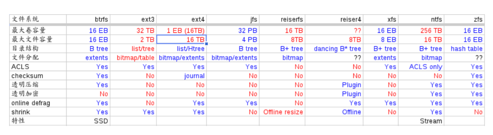

文件系统¶
介绍¶
文件系统是随着硬件的发展，以及数据存储发展的业务需要而不断向前发展的，并且两者之间的桥梁。
为充分利用内存空间，我们建立一系列的内存文件系统。随着数据量越来越大，我们也就需要分布式的文件系统。以及种备份的容灾的需求。
文件系统 ，任何时候不明白的都先回来看看最原始的教材。文件系统基本的功能，就是文件管理与目录管理。以及磁盘空间分配使用。 为什么要有这么多种文件系统。原因在于一定是不同的硬件实现。底层的实现是不样的。例如磁片硬件，与flash,以及固态硬盘，以及 人们对数据操作要求的不同。这种逻辑的需求与硬件结合的接口就是文件系统。对于不同的存储读写需求以及硬件实现，就会不同的实现实现算法机制。而这些就是文件系统。
对于硬件来说，对于磁盘片来说，那就是CHS。三级了。而对于flash也就又不一样了。 还是拿CHS模型来说，CHS最终还是定位到扇区上，每一个磁道的扇区数是不同的，最外圈的最大，最内圈的最小。每一个硬盘的参数表会有这些值的。 但是对CHS这种分区表方式会8G限制的问题，就有了后来的LBA模式，但是LBA模式最大支持2T限制。 CHS的MBR都是早期老掉牙方案了，虽然大部分讲分区原理都还在讲，但是拿这些理论已经不能解释现在的硬盘分区原理了，例如为什么现在分区是可以用GUID的。不过现在方案兼容老式的MBR。现在你看到的磁盘参数AAAA cylinders, BBBB Headers, CCCC sectors. 主要是为了让你换算LBA值来用的。LBA是绝对扇区号。换算方法是在这里`这里 <http://wenku.baidu.com/view/30e874c789eb172ded63b7c6.html>`_ . 而AAAA，BBBB，CCCC会做为硬盘参数的。 在往后会更大。这个主要是由于MBR机制造成的，因为MBR只留了６４个字节给分区表。现在又出了一种新机制EFI方案中GPT表。这里 有详细的说明。
对应的逻辑设备分为族/块，卷/分区。对应的逻辑存储单位，如何把逻辑单位与物理单位对应起来，就是格式化的过程，在Windows里就是format, 在linux里就是mkfs这条命令的过程之一。系统之上操作都是基于逻辑单位操作的。例如现在是利用的位图来表示，一个位表示一个逻辑单位的空闲与否。同样大小的位图可以多少空间，取决于这个逻辑单位的大小。这个颗粒度的大小匹配你的存储对象的特点。而这些管理都是基于分区的，每一个分区内部肯定首先这些控制模块，还是这些控制模块是放在全局的。每一个最小单位chunk只能在一个文件里，两个文件不能共享同一个chunk.就是为什么你经常看到的，文件的大小与实际占用空间大小是不一样的原因，因为文件本身的大小不可能每次都正好是最小单位的整数倍。
对于管理还说还inode. 对于文件数据本身是可读可写，以及是否支持加密压缩等等。实现起来都是不一样的。每是每一个文件系统都能够提供的。并且还有。例如日志文件系统。对于文件的操作都是如何记录存储的。并且如何进行数据恢复。 常见的存储需求：本身是可读可写，以及是否支持加密压缩，数据恢复功能，读多还是写多，是大数据多还是小数据多等等。以及`性能的要求 <http://wenku.baidu.com/view/a8608606cc175527072208a7.html>`_ 。
为什么要分区呢，是为了管理上的方便，使之具有隔离性，例如装操作系统，就要在独立的分区上。等等。另外也取与操作系统有关心，硬盘的结构MBR. 启动信息与分区表都在这里放着，但是分区表只有64节节，第一个分区占16字节，这样一个分区可如果大于2*312*512=2TB时，这个分区表就不行了。这种物理结构决定了如何进行分区。GPT分区。EFI、UEFI、MBR、GPT技术 但是GPT模式在Windows上有很大的限制，那就是目录不能当启动盘。
而在抽象层上，就各种各样的文件系统。linux 文件系统设计的很好，在linux里一切的资源，要么是file,要么是进程。 debugfs,Pipefs,sockFS,securityfs 这些都是虚拟的文件系统。你可以在 /proc/filessystems 里看到这些。
而在linux中每一个进程空间只有一个根文件系统。 并且一个device都根据自身的结构形成自己文件系统结构。在异构系统之间，我们通过mount,来建立之间的不同系统之间通信桥梁。相当于在我的系统里，/xxx/XXX 就是你的入口点，往下的目录都是你的。即然是一个通信机制。就会信息通信协议，通信的方向是双方的，还是单方的。这也就有了四种
具体可以说明见 kernel doc 应用挂载名称空间 来讲这些，空间的隔离，linux中使用各种各样的命名空间。
Pipe文件系统¶
linux 里大部分进程通信靠是Pipe，同步则是由Pipe 自己实现的，由于速度不的同，各种传输之间都会buffer来缓冲。 并且缓冲模式有
- buffered(默认4K), (STDin)
- unbuffred( 1byte)(STDERR)
- line buffered (1K) STDOUT
如果想控制这个buffer的大小，可以用stdbuf来调整。 可以查看man stdbuf.
http://blog.csdn.net/morphad/article/details/9219843 Pipe 文件系统的实现原理，pipefs 是虚拟的文件系统，使用用户空间的内存，挂载在内容中，并没有在根文件系统中。 用 kern_mount 来实现。
![digraph hardisk {
HardDisk [shape=MRecord, label =<
<table>
<tr>
<td>
<table><tr><td>MBR</td> <td>Partition Table</td> </tr></table>
</td>
<td>DBR </td>
<td>FAT </td>
<td>DIR </td>
<td>DATA </td>
</tr>
</table>
>];
}](../../_images/graphviz-154502cdd41c75bec45ce38737b63f3329fe6edd.png)
| fdisk | Partition Table | |
| format/mkfs | DBR | |
| filesystem (inode ) | FAT | 这个是基于文件系统的 ，是不同的，主要inode的结构。 |
| ^ | DIR | |
| real data | DATA |
每一个分区的超级块放在这个分区的头，如果有就在第二个逻辑块里，一般情况下，第一块是引导块，第二块为super block并且大小固定。并且格式，大小固定。 超级块，采用的是相互链表，并且vfs做了很好的抽象，并且还支持cache,定期与硬盘同步数据。 http://guojing.me/linux-kernel-architecture/posts/super-block-object/
每一个分区的超级块是有备分的，你可以用mke2fs -n 或者dumpe2fs 来查看，然后再e2fsk -b 来进行修复。 http://www.cyberciti.biz/tips/understanding-unixlinux-filesystem-superblock.html
supperblock 中存储 文件系统的格式，inode/block的总数，以及使用量，剩余量等信息。 .block与 inode的大小（block 一般为1，2，4K,这些存储真实的数据，大文件可以用block,小文件可以的block, inode一般为124/256 byte). inode 存储的文件信息，例如文件属性，文件的权限,修改日期等等，文件名的链接，最后是文件数据block的地址。 http://www.voidcn.com/article/p-mttgftgp-gn.html
每一个分区四大块:
![digraph filesystem {
partition [ shape=Record, label="boot block|super block | inode index block | data block"]
}](../../_images/graphviz-25402fbf68c1ac2745c9944050b35789a561be8f.png)
并且这个根文件系统是在内存里。 可以通过chroot 来修系统 的根在哪里。这在很多地方都能用到，例如安装机制，例如 apache中，当然不能一般用户得以/etc/目录了，所以要把 apache中根目录要改掉才行。并且还可以其他目录拼接成一个新的目录。
例一个用法，那就是修复系统时可以用到，例如 https://wiki.gentoo.org/wiki/Handbook:AMD64/Installation/Base 把proc 从加载一下，
每一个进程的都会记录自己的根目录在哪里，这样才能解析绝对目录与相对路径。
- 硬盘知识,硬盘逻辑结构,硬盘MBR详解 64 字节的分区表
- ` Partition Tables <http://thestarman.pcministry.com/asm/mbr/PartTables.htm>`_
- INIX文件系统中，第一个块为引导块，第二个块为超块，之后的N个块是inode位图块(表示哪几个inode被使用了，总的inode个数由超块给出)，紧接着是数据块位图，表示哪些数据块被使用了，紧接着就是inode块和数据块
- ext3 启动过程
- 硬盘及通用分区结构
使用sfdisk实现多操作系统引导 既然说到文件系统，就会主分区以及如何引导启动的问题。无非是在主引导区放了一个自己的引导管理器，来设置起动。而GTL的实现原理在于，用sfdisk来分区，把linux放在这个上面，并且如何保证始终在这个系统。目前看来，默认到都是先到这个操作系统，然后再由这个操作来用sdisk来改分区先项。但是如何来保证每一次都要改了启动选项呢。 其原理 是的windows 里使用LBOOT的原理就是利用GDisk 先改分区表，然后再起动。sfdisk 有一堆分区表，而MBR的分区表只表示当前活动的系统可见的分区。 一共有四个启动分区，其中一个常住了linux，并且在这个linux系统里放着sfdisk里的放着一堆分区表，然后系统活动的几个放在系统分区表。并且这个linux始终是第三个分区，所改变的前两项分区表。而Windows能够看到，就是把始动分区切到这个linux分区如果不需要切系统的就不需要了。然后linux再根据自己的分区表来更新系统的分区表。 所以sfdisk 需要一个第三方的东西来保存其分区表，在这里GTL用了第三个分区自身，并且在sfdisk里的一个参数 -o file 就是那个分区表的位置。
分区表除了要表示，分区的大小（通过起点，终点/长度来表示). 还需要分区的状态(活动与否），分区的类型也主要是用操作系统的类型。同一个值可能在不能操作系统下的识别是不一样的。MBR、分区表、CHS等概念 在DOS或Windows系统下，基本分区必须以柱面为单位划分（Sectors*Heads个扇区），如对于CHS为764/256/63的硬盘，分区的最小尺寸为256*63*512/1048576=7.875MB. 深入浅出硬盘分区表 分区表实际上一个单向的链表。
由于硬盘的第一个扇区已经被引导扇区占用，所以一般来说，硬盘的第一个磁道（0头0道）的其余62个扇区是不会被分区占用的。某些分区软件甚至将第一个柱面全部空出来。并且分区中就有一项，那就是第一个分区前面有多少个隐藏扇区。其实每个分区都会有一个引导扇区，也就是`VBR <http://en.wikipedia.org/wiki/Volume_boot_record>`_ ,整个硬盘的Boot record就是MBR。
现在明白了，老大的要讲故事，也就是要问为什么需要。同时也就是事情的前因后果，以及历史。自己如何早些问，那些文件系统有什么区别，现在也就早明白。直到现在才问。所以现在才明白。
| ext2 | http://learn.akae.cn/media/ch29s02.html | |||
| ntfs | http://bbs.intohard.com/thread-66957-1-1.html | http://blog.csdn.net/daidodo/article/details/2702648 | mount utfs as rw use fuse and ntfs-3g | |
| FAT | http://www.sjhf.net/document/fat/#4.3%20%20FAT%E8%A1%A8%E5%92%8C%E6%95%B0%E6%8D%AE%E7%9A%84%E5%AD%98%E5%82%A8%E5%8E%9F%E5%88%99 | |||
| rootfs | http://blog.21ic.com/user1/2216/archives/2006/25028.html | |||
| ramfs | rootfs | initrd and initramfs | http://hi.baidu.com/nuvtgbuqntbfgpq/item/537f1638797a88c01b9696f4 | |
| loop device /dev/loopXXX | http://www.groad.net/bbs/read.php?tid-2352.html | 把文件以及镜象挂载 | 是不是可以利用它来做系统血备份 |
看到现在终于把文件系统看懂一些吧，文件系统分为三层，文件本身内部结构一层，文件系统一层，分区与硬盘之间是一样。当然最初的概念都是结合物理模型的，随着后期的演化，最初的概念已经不是最初了的概念了。例如文件，最初都是就是一段扇区。但是到后期文件的已经完全脱离了，那个物理模型，就是变成了长度，并且这个常度就代表一个字节，并且字节也是一个抽象概念。不同的硬件，扇区的等等的分布是不一样的，不同的文件系统，block,inode之间对扇区对应关系都是不一样的。并且在文件系统上，文件不是顺序存储的。所以也就没有办法智能恢复了，也就只能整个硬盘做一个镜象，虽然你只用了一部分空间。 并且PBR的信息是放在分区里的，如果两个分区参数不一样，也是不行，相当于把分区的信息也复制过来了。而dd只能按块来读，在块之间来做转换。所以dd是在操作系统之下进行的，如果想用dd来做，要么两个分区一模一样，包括同样的位置有同样的坏道。要么要自己去解析文件系统的文件分配自己去读写分配每一个扇区。
文件系统格式¶
不同的文件系统格式，添加了不同的功能，特别是日志文件系统，添加一些数据恢复的功能，就像数据库可以根据日志rollback最佳状态。
https://zh.wikipedia.org/wiki/Ext4 增加了在线整理磁盘碎片的功能， ext3 是没有的https://zh.wikipedia.org/wiki/Ext3。 例如ext3grep,ext4magic, 大部分都是基于ext2fs_library.
http://extundelete.sourceforge.net/ 可以恢复数据ext2/3/4的数据。
下一代的文件系统 Btrfs 将是采用类似数据库的底层方式的B+ tree的文件系统。 进一步把文件系统与数据库融合在一起。
Btrfs 的简介 https://www.ibm.com/developerworks/cn/linux/l-cn-btrfs/index.htmloo 不同文件系统的性能分析 https://www.cnblogs.com/tommyli/p/3201047.html
android 主要是小文件，所以android系统默认是 ext4 格式。
调整分区的大小¶
http://blog.csdn.net/hongweigg/article/details/7197203
首先要自己记住分区的起始地址，然后修改分区表，然后再用 resize2fs,tune2fs 来更新文件系统的 meta data. 注意柱面号是按照unit 来计算的。 所以要学会计算这样。
如果想用dd来做, 先做一个OS,并且在硬盘上连续存放的，并且要知道这个区域的大小，或者说估计大约的值。并且硬盘状态一样。 这样可以像Copy文件一样，那样去做了。
另一个问题，分区的结构是否一样呢，如果分区的结构不样，例如索引节点的个数是不一样，这可能是按照分区的大小的百分比来进行的，如果新的分区足够大，就会出现浪费的问题，如果不够大就会可能出现错误。所以partitionclone最好的方式是能够认识文件系统。建立在文件系统上。就样可以解决这个问题了，这也就是为什么partclone要有那么多的，文件系统类型的支持。 可以直接使用 dd if=/dev/sda of=XXX.ISO 或者cat 直接做光盘镜象，然后直接使用mount来进行挂载。
dd if=XXX.iso of=/dev/<usbpartition> bs=4k cat XXX.iso > /dev/<usbpartition>
分区是对硬盘的一个抽象，对于ＯＳ来说，分区基本硬盘是一样的，并且分区上面还可以逻辑分区。block是对 扇区的一种抽象。文件相当于heads, 而目录相当于cylinders.
可以用 dumpe2fs 来查看文件系统，并且可以用 tune2fs 来调整参数。
由于物理磁盘受限于空间的大小，扩展起来不是很方便，这就有了逻辑磁盘的概念。lvm. 先在物理磁盘上建立phiycal Volume, 多个PV 可以组成一个VG，然后在每一个VG上可以建立LV，当然LV可也可以扩VG。而LV就当做一个分区来用。并且随时能够调整大小。 pv,vg,lv.

tree¶
用来查看filesystem的树型结构，并且通过用pattern过滤，以及控制输出各种格式XML,HTML以及–du 的功能。
Raid¶
- https://help.ubuntu.com/community/Installation/SoftwareRAID
- http://askubuntu.com/questions/526747/setting-up-raid-1-on-14-04-with-an-existing-drive
- https://raid.wiki.kernel.org/index.php/RAID_setup
- 七种raid配置通俗说明
原理是采用编码的冗余原理。但是数据量越来越大，传统的raid的对于数据恢复的需要的时候间也越来越长，因为也需要进一步raid上分片/分簇来局部化坏道与修复。
linux 采用 mdadm 来实现 /etc/mdadm.conf .
# mdadm -C /dev/md0 -a yes -l 5 -n 3 /dev/sd{b,c,d}1
mdadm: array /dev/md0 started.
-C ：创建一个阵列，后跟阵列名称
-l ：指定阵列的级别；
-n ：指定阵列中活动devices的数目
[root@bogon ~]# mdadm --detail /dev/md0
/dev/md0:
Version : 0.90
Creation Time : Tue Mar 15 08:17:52 2011
Raid Level : raid5
Array Size : 9783296 (9.33 GiB 10.02 GB)
Used Dev Size : 4891648 (4.67 GiB 5.01 GB)
Raid Devices : 3
Total Devices : 3
Preferred Minor : 0
Persistence : Superblock is persistent
Update Time : Tue Mar 15 08:20:25 2011
State : clean
Active Devices : 3
Working Devices : 3
Failed Devices : 0
Spare Devices : 0
Layout : left-symmetric 校验规则
Chunk Size : 64K
UUID : e0d929d1:69d7aacd:5ffcdf9b:c1aaf02d
Events : 0.2
Number Major Minor RaidDevice State
0 8 17 0 active sync /dev/sdb1
1 8 33 1 active sync /dev/sdc1
2 8 49 2 active sync /dev/sdd1
如何制作文件系统¶
mount 各种各样的文件系统，loop 表示把本地文件当做文件系统来进行挂载。同时也还可以重新mount –bind 挂载点。对于物理分区有的时候会用完，添加就需要重起机器。所以也就产生了LVM. 逻辑分区。随着云计算到来，一切的虚拟化。原来的系统都是建立物理设备上的，现在都直接在逻辑设备上了。这样就具有更大的移值性，就像我们的CAS就是把逻辑拓扑与物理拓扑的隔离。LVM就在物理分区与文件系统之间又加了一层。文件系统直接建在LVM。 loop device 就是伪设备当做块设备。http://unix.stackexchange.com/questions/4535/what-is-a-loop-device-when-mounting 数据的存储系统是任何一个现代系统必不可少的一部分。它关系着系统是否高效与稳定。使用数据库要求太多，而文件系统而是最灵活的，但是效率可能没有数据高。为了结合自己的数据存储需求，产生定制的文件系统，而非通过的OS文件系统。例如版本控制的文件存储系统，以及现在云计算系统都有自己存储系统。例如Google的GFS。fuse 文件系统是在用户空间的文件系统。如何使用 。并且通过它可以把一些服务当做文件系统来使用。例如google的mail空间。以及ftp等等。
通过对gentoo对于各种概念有了更深的认识。
不同的文件系统就是硬件磁盘与逻辑存储之间的映射关系。 所谓的超级块就是与文件系统有关的。 并且存储的效率以及备份与压缩的机制。
还有在备份的时候，先碎片整理最小化，然后再copy数据，这样会加块的速度。 e4defrag ，可以用碎片的整理，同时利用 gparted可以还直接对硬盘进行拉大与拉小，关键是存放的文件不要被覆盖。
分区与格式化挂载¶
sfdisk 是分区为了逻辑设备，就像人们有了多个硬盘一样。这个是由硬盘前面的分区表来决定的。而分区表的大小决定了，你可以有多少个分区，并且在分区表建立文件系统，在linux 下有各种各样的mkfs工具来供你使用。然后加载在OS上，这里就要mount了。 对于mount 由于这个概念泛化了。你可以mount 本地硬盘，也可以远程（NFS，autofs,samba) 还以把本地文件本身当做文件系统进行访问。同时也可以用bind 来把一个目录绑到另一个目录里，来避免ln的不足.`mount –bind挂载功能，避免ln -s链接的不足 <http://blog.csdn.net/islandstar/article/details/7774121>`_ ,`mount –bind 的妙用 <http://www.cnitblog.com/gouzhuang/archive/2012/07/15/65503.html>`_
windows自带磁盘分区工具Diskpart使用介绍 分区与`格式化 <http://baike.baidu.com/view/902.htm>`_ 是两步不同的操作.格式化又分为低级，与高级，低级格式化是物理级的格式化，主要是用于划分硬盘的磁柱面、建立扇区数和选择扇区间隔比。硬盘要先低级格式化才能高级格式化，而刚出厂的硬盘已经经过了低级格式化，无须用户再进行低级格式化了。高级格式化主要是对硬盘的各个分区进行磁道的格式化，在逻辑上划分磁道。对于高级格式化，不同的操作系统有不同的格式化程序、不同的格式化结果、不同的磁道划分方法。
同时为了支持热mount,还有 https://en.wikipedia.org/wiki/GVfs， gvfs 可以在用户态加载空间，例如把ftp,smb等等把网络mount到本地。例如 gvfs-mount ‘ftp://user@www.your-server.com/folder‘ 目录都在 .gvfs/ 下面。 并且其下有一堆的gvfs-ls/cat, 等等一堆的命令。
例如 curlftpfs 支持把http,ftp等mount到本地。
各个系统的共享，这样就可以减少大量的配置工作，例如的所有的工作机都直接mount同一个存储目录，这样就可以大量的login以及editor的配置，可以直接使用自己本机的编辑器配置，而运行在其他机器上。 这样的并行度就会大大很多。
mount.cifs 可以持 samba等等，使用fuse为基础的gvfs 可以挂载 ftp,http等。而sshfs可以直接mount ssh 帐号。 只需要两条命令: apt-get install sshfs, 然后把自己加入sshfs这个用户组就行了。 http://www.fwolf.com/blog/post/329
共享目录¶
- 两种办法做这个，一种用autofs, 一次用可以使用cifs-utils. 直接mount就行。
mount -t cifs -o user=xxxx,password=xxx //192.168.0.1/xxx /mnt/
- linux 访问windows 共享目录 也可以直接使用`smbclient <http://wenku.baidu.com/view/ab3e7ffc910ef12d2af9e7bb.html>`_
- autofs our builds use it on farm
#. 如果自己想用FUSE系统直接支持和种http,ftp等等在线系统。可以用 https://www.stavros.io/posts/python-fuse-filesystem/ 来实现。
apt-get install autofs
mkdir /network
auto.master
/network /etc/auto.mymounts --timeout=35 --ghost
auto.mymounts
prerelease -fstype=cifs,rw,noperm,user=devtools_tester1,pass=nvidia3d,dom=nvidia.com ://builds/prerelease
硬盘检查与修复¶
| extfs | e2fsck -y /dev/sda1 |
| HFSP | fsck.htfsplus -f -y /dev/sda1 |
| NTFS | ntfsfix -d /dev/sda1 |
| Reiserfs | reiserfsck -a -y /dev/sda1 |
- e2fsck 还有一个配置文件
etc/e2fsck.conf
修复的原理，那就是各种文件系统的，格式
Ext3日志原理 whats-the-difference-between-e2fsck-and-fsck-and-which-one-i-should-use
man¶
H 可以打开man的命令帮助文档。
HardLink and softlink¶
我们知道文件包括文件名和数据，在Linux上被分为两个部分：用户数据（user data）和元数据（metadata），用户数据主要记录文件真实内容的地方，元数据是记录文件的附加信息，比如文件大小、创建信息、所有者等信息。在Linux中的innode才是文件的唯一标示而非文件名。文件名是方便人们的记忆。
为了解决文件共享的问题，Linux 引入两种链接：硬链接和软连接。
- 若一个innode号对应于多个文件名，则成为硬链接
- 若文件用户数据块中存放的内容是另一个的路径名的指向，则该文件就是软链接。
`http://www.ibm.com/developerworks/cn/linux/l-cn-hardandsymb-links/`_
what-is-the-difference-between-a-hard-link-and-a-symbolic-link
http://www.ibm.com/developerworks/cn/linux/l-cn-hardandsymb-links/ hardlink 一个用途那就是做备份，要比copy更加快速方便。
Easy Automated Snapshot-Style Backups with Linux and Rsync 可以快速建立一个 hourly,daily,and weekly.snapshots. 并且一个快速 rotate 机制，就是一个重命名。
rm back.3
mv back.2 back.3
mv back.1 back.2
mv back.0 back.1
rsync -a --delete source_directory/ backup.0/
对于文件系统的监控¶
文件系统的消息的类型与数量也是固定的，可以用api来得到，mount –make-rslave 等等就是控制的消息的传递。 同时也可以用 gardgem 以及系统默认的watch 的命令一样。这样的工具也特别需要例如node.js开发的时候就提供这的工具。实时更新重起 service.
分区表的格式¶
硬盘的分区格式是用signature 来区分的，如果是总是识别的不对，应该原来signature没有清除掉，或者不同的软件的默认的读写位置不对。 如何用dd来查询硬盘的头部信息直接来得到或者直接修改。
parted -l #查看分区格式
dd if=/dev/sdb skip=1 count=1 |hexdump -C #查看内容
dd if=/dev/zero count=1 seek=1 of=/dev/sdb #把内容清除为零
See also¶
- TFS taobao 分布式文件系统，TFS集群文件系统 把原数据放在文件名与路径上，采用对象存储，
- 存储领域面临六大趋势
- 什么是对象存储？OSD架构及原理 核心是将数据通路（数据读或写）和控制通路（元数据）分离，并且基于对象存储设备
- OpenStack对象存储——Swift
- 图片存储系统设计
- 学会理解并编辑fstab
Paper¶
Thinking¶
CHS 记住硬盘这一物理存储结构就知道来理解一切就都会明白了，物理结构本身三级目录。柱面 磁头，扇区。第一个磁道的扇区数一样吗。柱面与磁头决定一个磁道。 grub 的原理与硬盘的结构是相关的。并且始终记住一点那就是对于处理器来说，它能做的那就是程序在哪儿，程序指针指哪从哪开始执行。开始执行前要把需要的程序加载在内存。grub其实就是做了这样的事，BIOS把MBR放在内存中，并且处理器的跳转那里。MBR放的就是grub引导程序。然后呢，grub做了三件事，要确定系统放在哪。然后从那里把去把内核镜像加载在内存中，并设置相关的环境变量，例如root目录，以及内核在哪里。 然后把执行权交给内核。
– Main.GangweiLi - 15 Jan 2013
长路径与文件夹的作用 长路径来保证文件名的唯一性，能过长路径来保正。其实也就是字符串长与短一种映射，这一个就是能够解决集体操作。一次对多个文件进行同样的操作。也就是有一种方法可以直接对压缩文件来进行操作。如果解决了这个问题，其实也要不要这么文件夹。也就不是大的问题。更多的逻辑分块的需要。
– Main.GangweiLi - 12 Mar 2013
数据库与文件系统 本质上数据库本身也是一种文件系统。对于不同的存储对象，采用不同的机制。例如一些锁碎的类似于ERP这样数据适合于数据库这种存储系统。而大的块数据例如视频则任何于直接存储于文件系统上。例如不同的文件系统对于备份以及权限的管理是不一样的。 并且还有一个分布式文件系统的问题。还有版本控制库的文件系统。并且各种文件系统有融合之意。例如mongo,TFS,GFS等等。
– Main.GangweiLi - 12 Mar 2013
内存文件系统 为了使启动更加方便，把内核更不断不分层模块化。来使其更加通用，与复用。因为内核变化速度要比文件系统要快。
– Main.GangweiLi - 19 Apr 2013
文件属性 在查找的，排序的时候，利用文件属性会具有很大的优势，另外一个文件的属性是存储在哪里的。例如我想基于文件属性的查找排序是会很有用，在win7上是可以随时调整的，但是linux上却没有发现，如何大规模对象存储。对于图象。更是如此。例如利用find可以查找有限的文件属性。 IBM filesystem 系列 现在才对文件系统的认识有了更深的认识。需要文件系统具有什么样的能力。
文件系统中节点的类型¶
- directory
- file
- symlink
- block device
- charactor device
- FIFO
- unix domain socket
References¶
| [1] | http://www.jianshu.com/p/c6a530365bea |